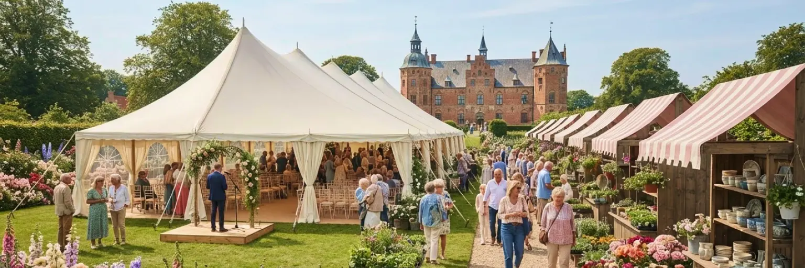
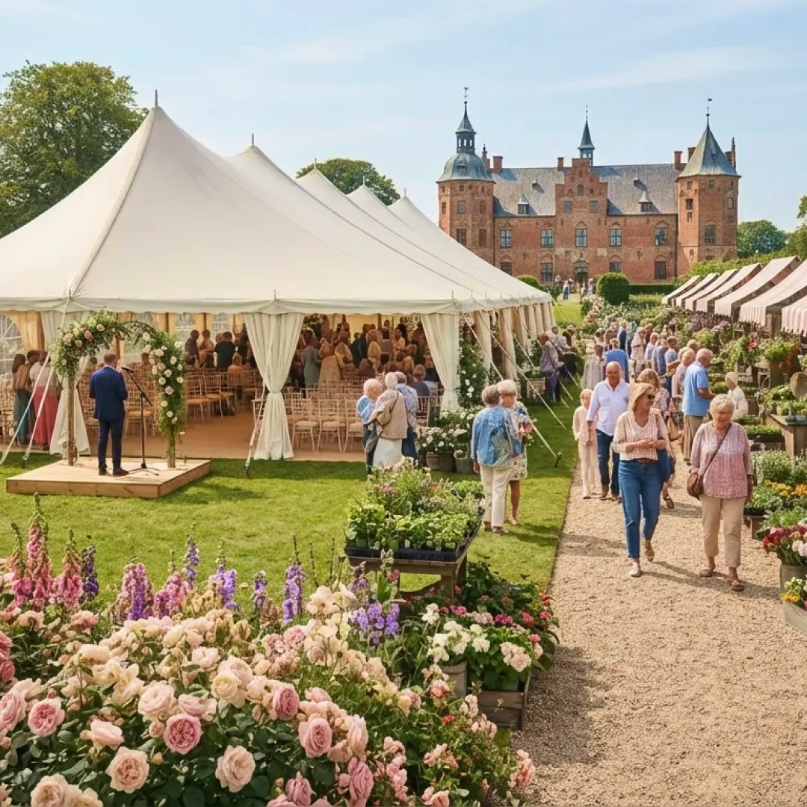
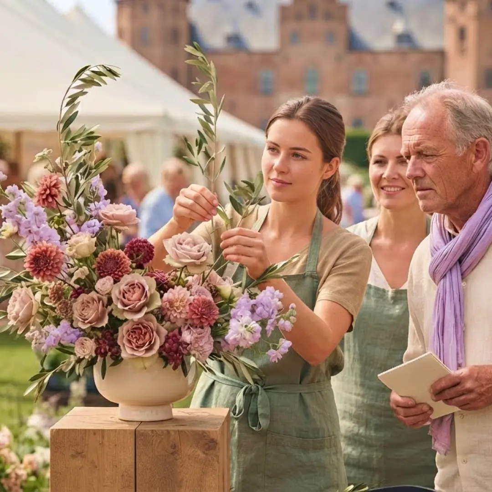
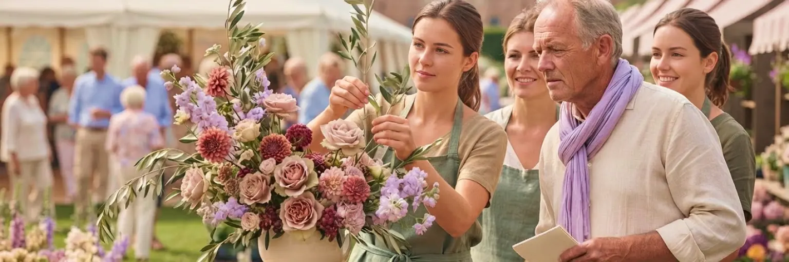
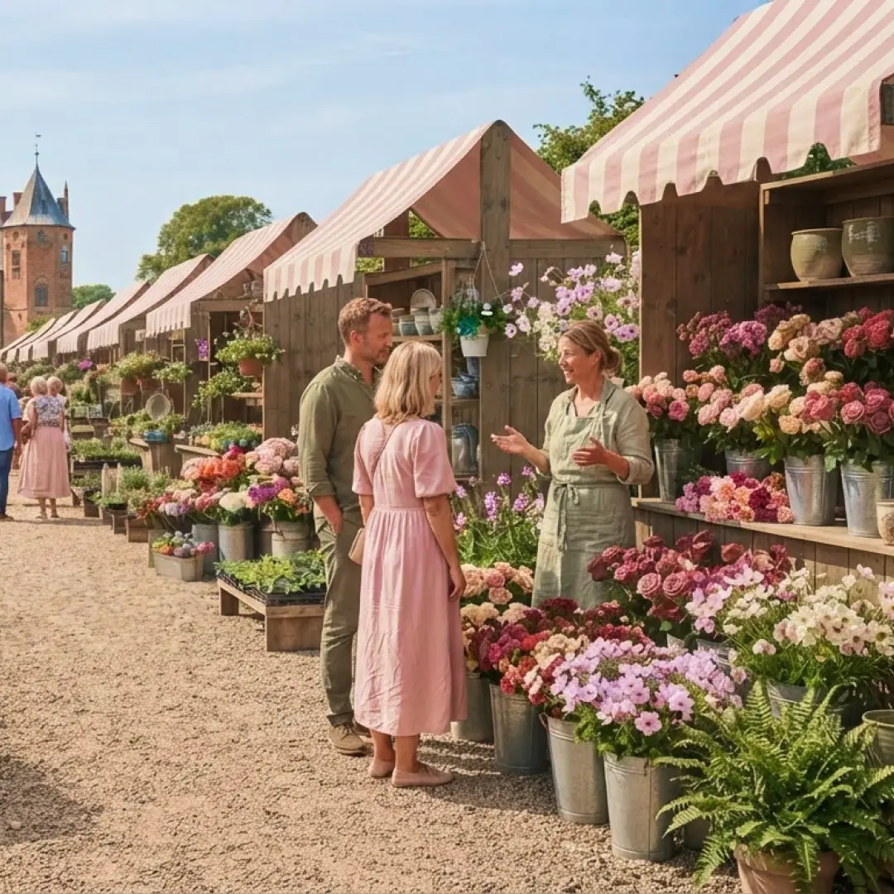
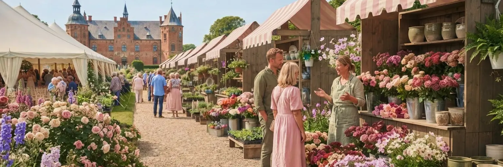

Danmarks største blomstermesse
En weekend i blomsternes tegn
Oplev blomstermessen i de smukke omgivelser ved Egeskov Slot. Gå på opdagelse blandt farverige blomster, grønne planter og kreativ blomsterkunst. Deltag i inspirerende foredrag og workshops, mød passionerede udstillere, og find blomster, keramik og nye idéer til hjem og have. Her er inspiration for både nysgerrige begyndere og erfarne blomsterentusiaster.

Oplev vores spændende boder
På messeområdet finder du et bredt udvalg af boder, der dækker alt inden for blomster, planter og tilbehør:
Oplev vores spændende boder
På messeområdet finder du et bredt udvalg af boder, der dækker alt inden for blomster, planter og tilbehør:
Eksotiske planter og stueplanter
Gå på opdagelse blandt sjældne botaniske skatte, hængeplanter og grønne favoritter til stuen, præsenteret af specialiserede planteskoler.
Bæredygtig brugskunst og keramik
Håndlavede potter, vaser og skjulere i naturmaterialer og genbrugsglas, der fremhæver blomsternes naturlige skønhed.
Værktøj og professionelt udstyr
Knapper, sakse, bindetråd og alt det grej, du skal bruge for at skabe professionelle blomsterdekorationer derhjemme.
Friske snitblomster direkte fra avlerne
Køb friske, sæsonaktuelle markblomster og roser med hjem, og skab dine egne unikke buketter.

Foredrag og workshops
Bliv klogere på alt fra bæredygtig dyrkning til moderne blomsterkunst ved vores daglige foredrag og hands-on workshops

Foredrag og workshops
Bliv klogere på alt fra bæredygtig dyrkning til moderne blomsterkunst ved vores daglige foredrag og hands-on workshops:
Foredrag: Fremtidens bæredygtige floristik
Kl. 11:00 – Store Scene
Hør om, hvordan branchen arbejder med miljøvenlige alternativer, bionedbrydelige materialer og lokalt dyrkede blomster uden brug af skadelige sprøjtemidler.
Workshop: Bind din egen sæsonbuket
Kl. 13:00 – Kreativt Værksted
Få gode råd til farvesammensætning, teknik og proportioner, og bind din egen smukke buket under kyndig vejledning af en erfaren florist (tilmelding på dagen).
Foredrag: Indretning med grønne planter
Kl. 15:00 – Scenen i Hal 2
Få eksperttips til, hvordan du skaber det perfekte indeklima og indretter dit hjem med planter, der passer til lysforholdene i netop dit hjem.

Vinsmagning – smag, duft og inspiration
Tag en pause fra messens mange oplevelser, og gå på opdagelse i vinens verden.

Vinsmagning
Tag en pause fra messens mange oplevelser, og gå på opdagelse i vinens verden. Til vinsmagningen kan du udforske forskellige vine og blive klogere på druernes karakter, vinens aromaer og samspillet mellem smag og duft. Uanset om du er nysgerrig nybegynder eller allerede har en favoritdrue, er der inspiration at hente. Få tips til at smage på vin, stil spørgsmål, og opdag nye favoritter i hyggelige omgivelser. En sanselig oplevelse med plads til både fordybelse og gode samtaler.